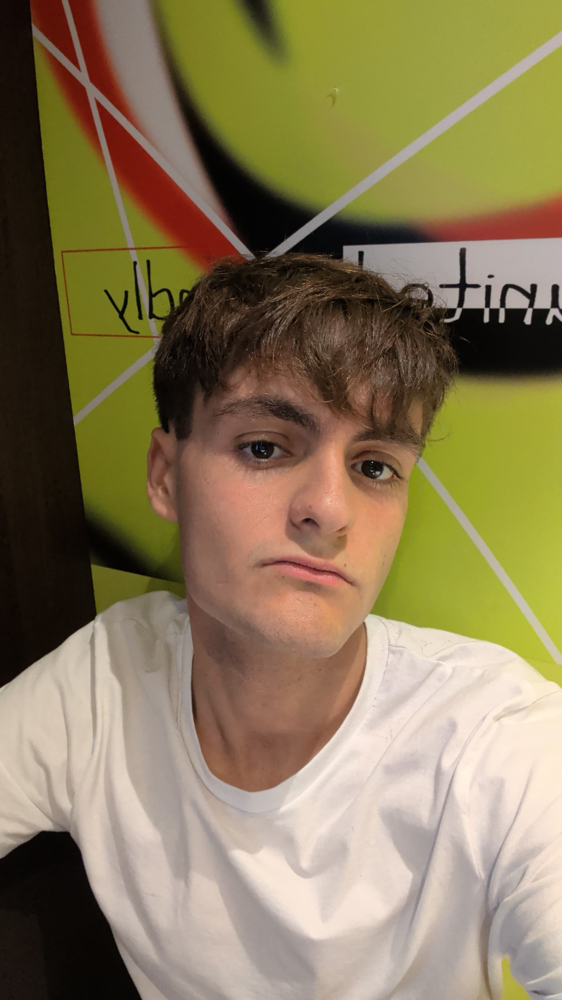

Técnico en Sistemas y Redes | Futuro Desarrollador DAM
Soy una persona con objetivos definidos y una mentalidad orientada al crecimiento. Me encuentro formándome en sistemas informáticos mientras trabajo de forma independiente para alcanzar mis metas económicas y profesionales. Creo firmemente en el valor del esfuerzo constante y la superación personal.
Gestión de redes locales, configuración de entornos Windows/Linux y herramientas de Cisco. Solidez técnica en infraestructuras microinformáticas.
Manejo fluido de Python y HTML. Aplicación de control de versiones con Git para optimizar el desarrollo y prepararme para el salto a DAM.
Diseño y desarrollo sitios web modernos, funcionales y adaptados a las necesidades de cada proyecto o negocio. Enfocado en la experiencia de usuario, velocidad de carga y adaptación óptima a todo tipo de pantallas.
Estoy convencido de que una buena red de contactos es clave para el éxito profesional. ¿Hablamos?